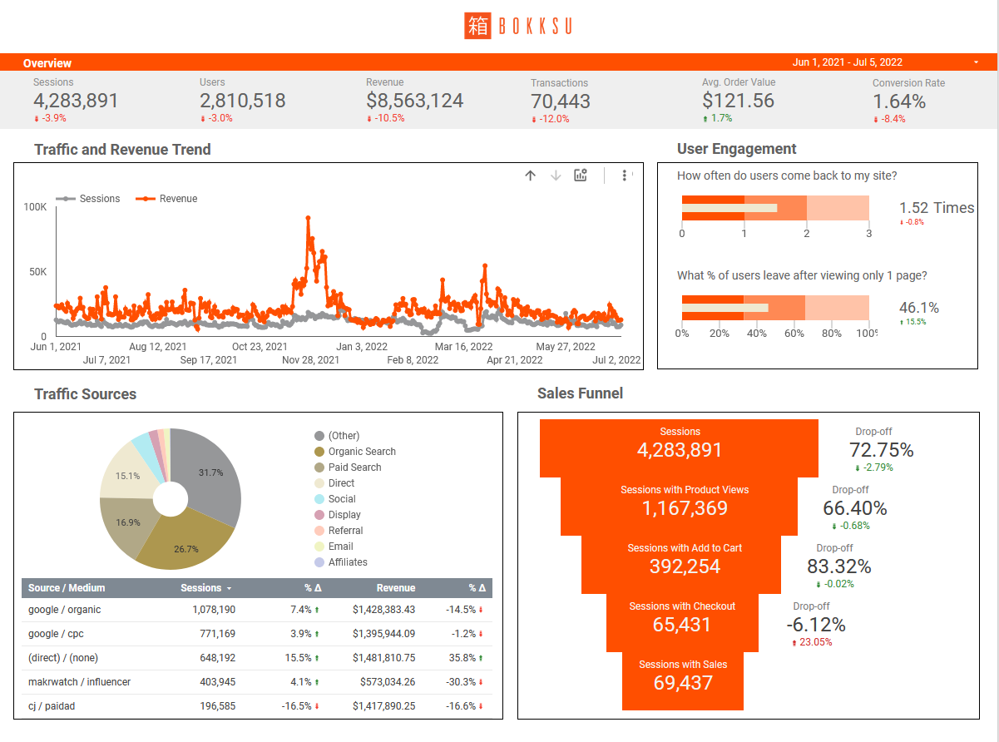

Growth Strategy
Bokksu embarked on a journey to enhance customer retention and increase lifetime value amidst a competitive market landscape, aiming to reach a valuation milestone by year-end. As Senior Consultant for Growth, I collaborated closely with C-suite executives to prioritize strategic roadmaps grounded in robust data and extensive user research.
10X year-over-year growth
Between 2022 and 2023 Bokksu grew more than any of its competitors as a result of their increased focus on gifting and craft.
2023 Bokksu aquires Japan Crate
The success of Bokksu’s international e-commerce, now paired with the addition of retail locations across the U.S. will grow Bokksu’s reach exponentially.

The Process
Finding opportunities in data
Bokksu needed to reach a valuation of 100M by the end of the year. In addition to needing an increase in new customers, Bokksu needed to greatly increase customer retention. I led the product team research and worked with C-suite managers to ruthlessly prioritize a roadmap to achieve their goal.
Research & Analysis
Who are our real customers?
Initially, Bokksu's influencer partnerships generated high sales volumes, but an alarming 80% churn rate prompted a shift towards deeper customer insights. Through comprehensive surveys, interviews, and cohort analysis utilizing tools like Google Analytics, Little Data, Tresl, Yotpo, and Gorgias, we unearthed critical psychographic data beyond demographics. This informed the creation of detailed personas and user journey maps, revealing significant international customer segments and income distributions previously overlooked.
1
Segmenting Customers
Bokksu had GA but we needed to be able to see the information in a more customized view. We created dashboards in Data Studio to make our analysis easier. Our dashboards allowed us to see things like Time of Day customers are the most responsive to conversion rates by country.
We began by synthesizing all of the big data using Google Analytics with Little Data, Tresl, Yotpo and Gorgias. I created cohorts based on the larger data view to narrow down our pool and give us the ability to see impact of our efforts on specific customers.
{kind=link}

2
Surveys & Interviews
I led the team in creating surveys in TypeForm and sending them out to these cohorts. Over 100,000 surveys analyzed and 30 1:1 customer interviews.

{kind=link}
{kind=link}
Creating Three New Personas
Creating new personas was essential to help all teams stay aligned. A better understanding of emerging customer segments allows Bokksu to tailor products and services to meet specific user needs and gain deeper insights into customer behavior and preferences. These new personas helped create a competitive advantage, exposing new opportunities like personalized marketing strategies, improved experience for loyal subscribers, and elevating the gifting experience. This approach also helped inform geographic and demographic expansions, ensuring continued relevance and success as seen in their acquisition of Japan Crate in 2023.
{kind=link}
{kind=link}
Storytelling around family owned makers
Establishing Bokksu as a luxury brand leveraging exclusive partnerships with craft food makers. More copy.
International Customers
Bokksu was surprised when I uncovered a loyal international customer base that experienced pain points around taxes and shipping.
Transparent shipping information and costs were added to checkout. After acquiring JapanCrate, Bokksu was able to ship from international distribution centers and lower shipping costs.
Focus on the gift giving experience
Revamping the gift-giving experience to ensure transparency and delight for both givers and receivers.
Giving became a focus of the main navigation with a different path than subscribers. The gifter and receiver were both given emails announcing their gift and subscribers were sent Marketing emails to offer them discounts on gifting subscriptions in October and November.